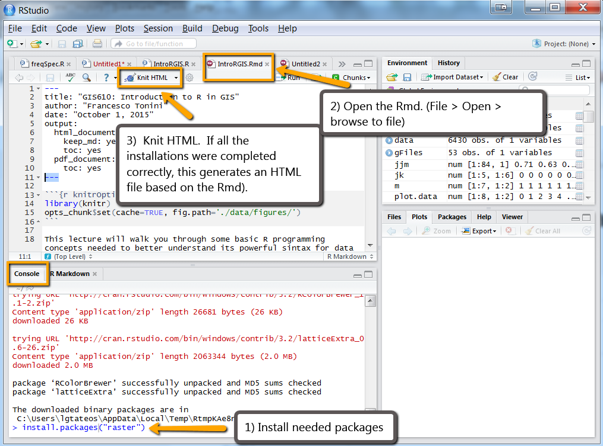

Learn basic commands in Windows console:
http://www.computerhope.com/issues/chusedos.htm
To launch the Windows console, go to the Start button and type cmd
Use
dir to list directory contents.
Use
cd change directories
cd C:/temp
cd .. (goes up a level)
Install Python software via the command line
Easy Install is a Python module (easy_install) bundled with setuptools that lets you automatically download, build, install, and manage Python packages.
To get it:
2) Run ez_setup.py (You can do this at the command line or I think you can run it in an ide.)
This should enable you to use easy_install. For me, it installed easy_install.exe under here C:\Python27\ArcGIS10.2\Scripts
3) Then you can run something like this (depends on your ArcGIS install version--this laptop is still on Arc 10.2):
C:\Python27\ArcGIS10.2\Scripts\easy_install flickrapi
4) Test the software in Python IDE:
import flickrapi
Run a database software from the command line
- Download sqlite https://www.sqlite.org/download.html Precompiled Binaries for Windows, the command line one. Unzip it. Double-click it to install. Find out where it installed.
- Go back to the Windows command line. cd to the directory where it installed. Enter a SQL command at the prompt to create and populate the new database. At a shell or DOS prompt, enter:
sqlite3 test.db
This creates a new database named "test.db".
- Type the name of the sqlite executable in the command window to start sqlite.
Learn a few basic database commands
- Create the friends and cars tables by copying the code to CREATE these tables from the SQLite Introduction page
type .exit when you want to quit sqlite3
Install PostGreSQL
PostGreSQL
http://www.postgresql.org/download/windows/
Download the installer from EnterpriseDB for all supported versions.
Get started with IPython Notebook
- Install and run ipythonNotebook (you have to install pip first, using the lab 2 instructions before this will work).
- On the command line, install ipython using pip:
pip install ipython[all]
- On the command line, run ipython Notebook:
ipython notebook
- Create a new notebook by selecting Python 2 from the 'New' drop-down menu on the right.
- Use some iPython Notebook formatting features:
- Change the title of the notebook by replacing 'Untitled' with your unity id underscore PlayNotebook (e.g., jkrowli_PlayNotebook)
- Insert a heading. Here's how: The notebook is composed of cells. Every cell has a unique purpose depending upon its type. Each cell in the notebook is a Python code-cell by default. To change the type of the cell, use the first dropdown box in the toolbar. Highlight the first cell by clicking on it. From the dropdown select Heading. This will change the highlighted cell type to a header (e.g., Homework 2). Press Shift+Enter to execute the current cell and move to the next one. If no cell exists below the current one, a new cell will be created. To insert a cell above or below the current cell, use the Insert menu. Likewise, to delete a cell, select the cell and use the Edit menu.
- Change the next cell to a “Markdown” cell type. Then type some markdown code. (e.g., iPython <b>notebook</b> is <i>cool</i>! ) Pressing Shift+Enter will render the markdown. The markdown type is used to create formatted text within the notebook. This example used html, but markdown has it's own set of simpler symbols that convert to html. For example, change the next cell to a markdown cell and then type the following (and press Shift+Enter ): iPython **notebook** is *cool*!
Here's a markdown cheat sheet http://nestacms.com/docs/creating-content/markdown-cheat-sheet. To learn even more about the Markdown syntax, visit http://daringfireball.net/projects/markdown/. IPython supports a rich variation of Markdown. (This variation allows Latex equations to be entered directly into the markdown. Latex is a document preparation system for high-quality typesetting, often used for creating academic publications.)
- Note that each time you want to execute the code in a cell, you press Shift+Enter. Use your notebook to execute code as follows:
- iPython notebook can act as a regular Python Interactive window. For example, try the following code using 'C:/Temp' or your favorite small directory:
import os
myDir = 'C:/Temp'
for root, dirs, files in os.walk(myDir):
print 'root = {0}'.format(root)
print 'dirs = {0}'.format(dirs)
print 'files = {0}\n'.format(files)
- You can also use it to run arcpy commands. For example, try the following:
import arcpy
arcpy.ListPrinterNames()
- iPython also has a set of "magic" commands that help the interactive programming process. Magic commands are prefixed with a single or double percent symbol. The pylab magic command automatically configures Python for plotting. Use the pylab magic command by entering the following into a code cell:
%pylab inline
- pylab is a numeric computation environment with its own set of commands. For example pylab has a linspace command. Try the following code in the next cell to see what linspace does.
linspace(0,10)
- Next, in another code cell, add and execute the following Python code to plot a segment of the sine function:
x = linspace(0,10) #Returns evenly spaced numbers over the specified interval.
y = sin(x)
plot(x,y)
- In next cell, write and execute code to plot the arctan function with x ranging from 0 to 10.
- Finally, write some code to calculate the visual angle of a 0.47 inches high object 27 inches away. According to the lecture, this should be around 1 degree. Notice that arctan returns results in radians. Convert the return value to degrees (using something like this: theta*180/pi)
- You can save your notebook in several ways. For this homework, save it as an html file. File > Download as > .html and submit this file to show your work.
For other projects, you can share your work on NBviewer. To store a notebook online, you can use GitHub’s gist service by navigating to https://gist.github.com in Chrome (Firefox doesn't work at this time). Then find your notebook file (the one ending in .ipynb) in the directory where you created it. Drag and drop the notebook file onto the largest textbox on the gis.github page. Next click on the “Create Public Gist” button (Do not use the Create Private Gist function. This does not work with NBviewer) The web page address can be rendered using nbviewer. This can be done by copying the address into the textbox on http://nbviewer.org/ and clicking the “Go!” button. A static rendering of the notebook, as seen below, will be displayed. The address generated by nbviewer can be shared with anyone. People viewing your notebook do not need a GitHub account.
Get the GRASS-GIS workshop materials up and running
Download and install the OSGeoLive Virtual Machine:
https://live.osgeo.org/en/index.html (Get the .iso file from here: https://sourceforge.net/projects/osgeo-live/files/10.0/)
Next, inside the Virtual Machine:
1) Open Firefox (there's a button along the bottom bar). Browse to https://github.com/wenzeslaus/python-grass-addon
2) Select the "Clone or Download" button. Then "Download Zip"
3) Extract the zipped contents. (Right click on the file. Name starts with "Python-addons". Select "Extract Here" to unzip the Downloads)
Now you should have a directory with this path: /home/user/Downloads/python-grass-addon-master/ (confirm that there is a ipynb file just inside this directory)
4) Launch the command window (inside the vm, click on LXTerminal button along the bottom bar).
5) In the command window, change directories to your new folder by entering the following command:
cd Downloads/python-grass-addon-master/
6) In the command window run GRASS GIS. To do this, type grass and tab. It will auto-complete with the full grass version name. For example, it will say something like: grass70 Press Enter to run grass.
7) In GRASS, select a GRASS Location (e.g. loc_carolina...) and select GRASS Mapset (e.g., User1). Then click 'Start GRASS session'.
8) In the command window it should give you a GRASS prompt. Now you're ready to launch ipython notebook inside of GRASS GIS. It will automatically open the notebook that's in the current directory that you have changed to. At the prompt, type
ipython notebook
(you might need to wait a moment before the webpage launches. Don't worry about any errors reported, as long as you see IPython Notebook launched successfully)
Now you're ready to follow along with the workshop. Enjoy!
GRASS GIS Manuals are here: https://grass.osgeo.org/documentation/manuals/
R Lab (post on Piazza if you have trouble)
-
Get R
First you need to install R programming language. R 3.0.2 or later installed on your computer. Click here and select the appropriate installer for your operating system.
For help installing R, check out one of the following videos (courtesy of Roger Peng at Johns Hopkins Biostatistics):
In addition to R, you need to install RStudio, which will make your experience with R much more enjoyable. This is an IDE for R. To install RStudio, click
here and select the appropriate installer for your operating system.
To install a package in R, you can type install.packages("packageName") in the RStudio console window. Install the following packages (make sure to put quotations around the package name):
sp
rgdal
maptools
latticeExtra
raster
- Test the installation by downloading the zip file (below), opening the R markdown file (it has a .Rmd extension). Then knit the HTML. This should generate a new HTML page in the same directory as the R markdown file.
